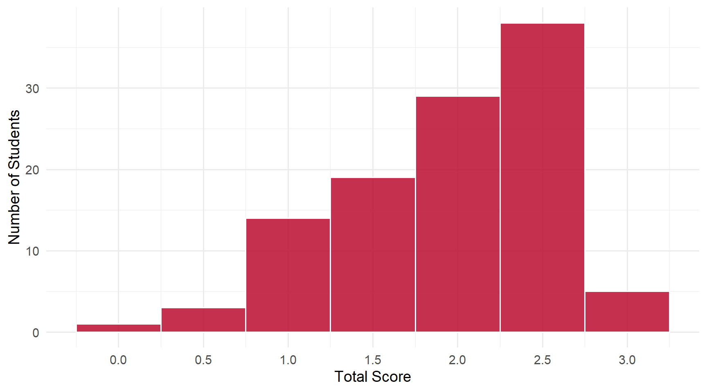
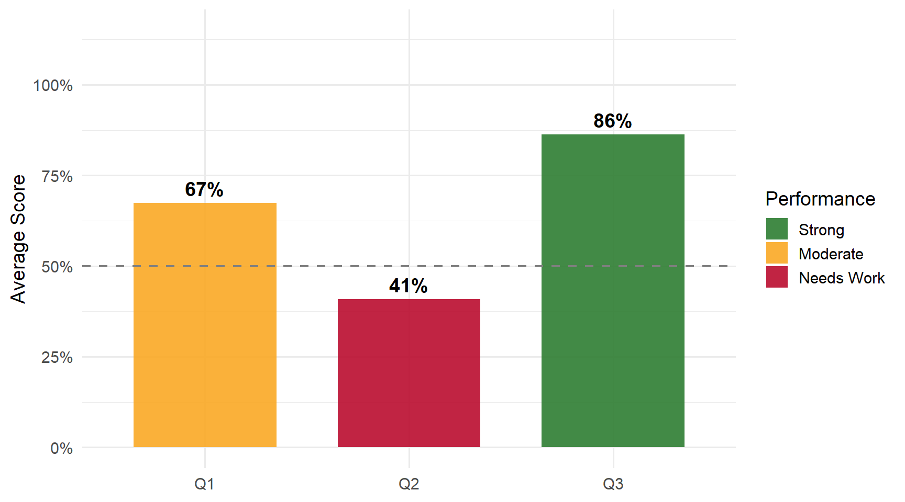

Daily 7 - Feb 9
Class Performance
Students: 109 | Mean: 1.94 | Median: 2 | SD: 0.64
Scores ranged from 0 to 3 out of 3 points.
Score Distribution
Performance by Question

Questions
Q1: Variance Estimator Formula
Correct Answer
var(X) = 1/(N-1) \(\sum_i\) (X\(_i\) - \(\overline{X}\))\(^2\) — the sample variance formula. Either 1/N or 1/(N-1) is acceptable since the course relies on asymptotic results.
Common Errors
- Wrote the sample mean formula — 1/N \(\sum\) X\(_i\) is the sample average, not the variance. The variance measures spread around the mean.
- Wrote population/expected value formulas — E(X), \(\sum\) P\(_j\)Y\(_j\), or \(\sum\) P\(_j\)(Y\(_j\)-\(\mu\))\(^2\) are population quantities, not sample estimators.
- Missing the squared term — The variance requires squaring the deviations (X\(_i\) - \(\overline{X}\))\(^2\); without it the sum is always zero.
Q2: Significant ITT Effects in Table S16
Correct Answer
Participation and Trump Vote are statistically significant at the 5% level (|t| > 1.96). Affective Polarization is close (t \(\approx\) 1.93) but not quite significant.
Common Errors
- Only identified Participation, missed Trump Vote — The most common partial-credit error. Both effects have |t| > 1.96.
- Listed non-significant effects — Issue Polarization, Perceived Legitimacy, Knowledge, and Trump Favorability are NOT significant. Check |t| > 1.96 for each row.
- “All” or “All except Participation” — Not all effects are significant. “All except Participation” reverses the answer since Participation IS significant.
Q3: Rate of Return (Figure 4)
Correct Answer
Approximately 4 (or 4%) — the rate of return to another year of labor-market experience in the first year of a career.
Common Errors
- Wrote the coefficient (0.0399) — The question asks for the integer approximation. The coefficient 0.0399 corresponds to approximately 4%.
- Wrong number (2, 3, 5, etc.) — Misread the figure. The first-year return is approximately 4%, reading from the leftmost point on the curve.
- Wrote a regression equation — The question asks for an integer value from the figure, not an equation or formula.
Key Takeaways
Strengths: Most students correctly wrote the variance formula | Strong performance reading the rate of return from Figure 4.
Review:
- Know the variance formula structure — 1/N or 1/(N-1) times \(\sum\)(X\(_i\) - \(\overline{X}\))\(^2\); don’t confuse with the sample mean
- Identifying significance: |t| > 1.96 — only Participation and Trump Vote pass this threshold
- Read figures carefully — report the integer value (4%) not the raw coefficient (0.0399)